Resources
The First Steps in 3D Printing
1.) Inspiration
The very first thing you should do when 3D printing is deciding what to print! You can design your own model or choose one already out there. Here at the MakerLab, we encourage first time makers to take a look at thingiverse.com. Or you can take inspiration from what other makers at the lab have already printed!
 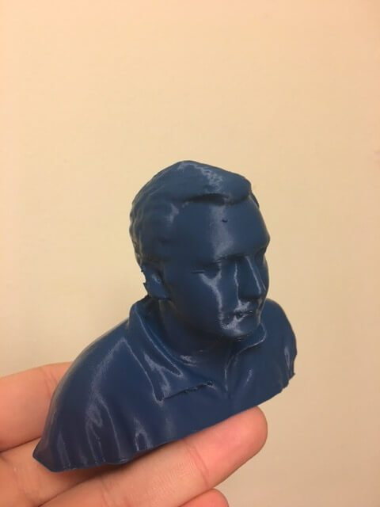
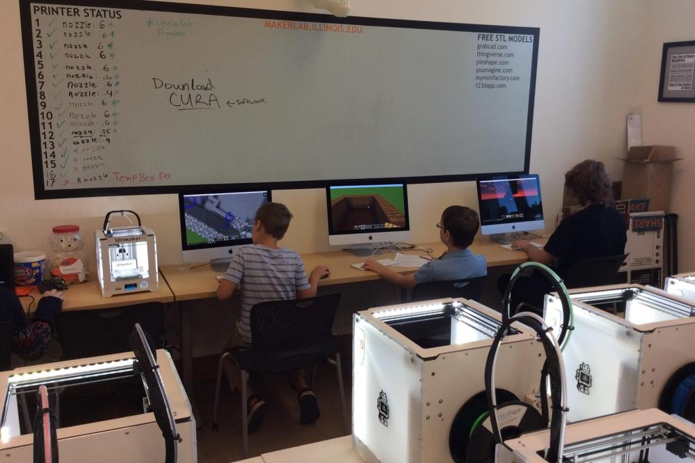
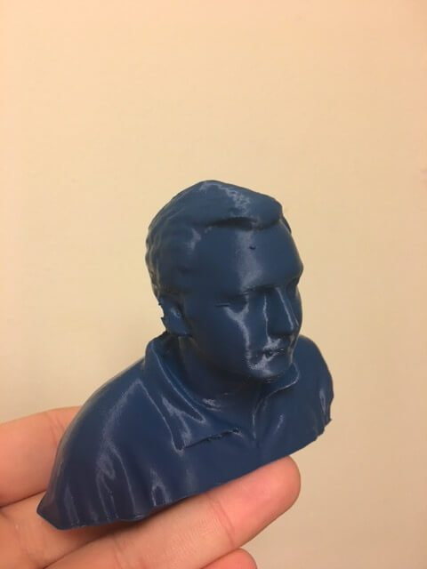
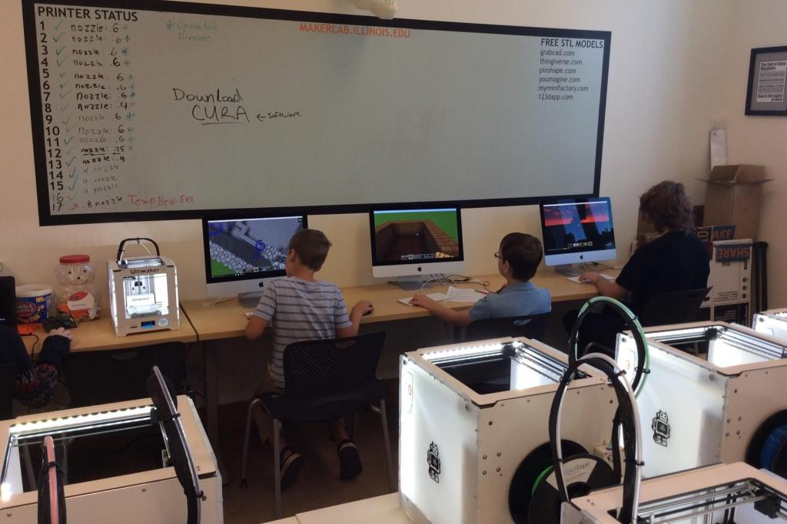
 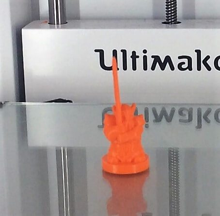
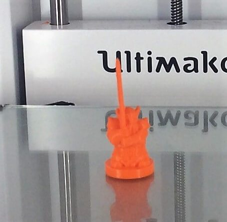
 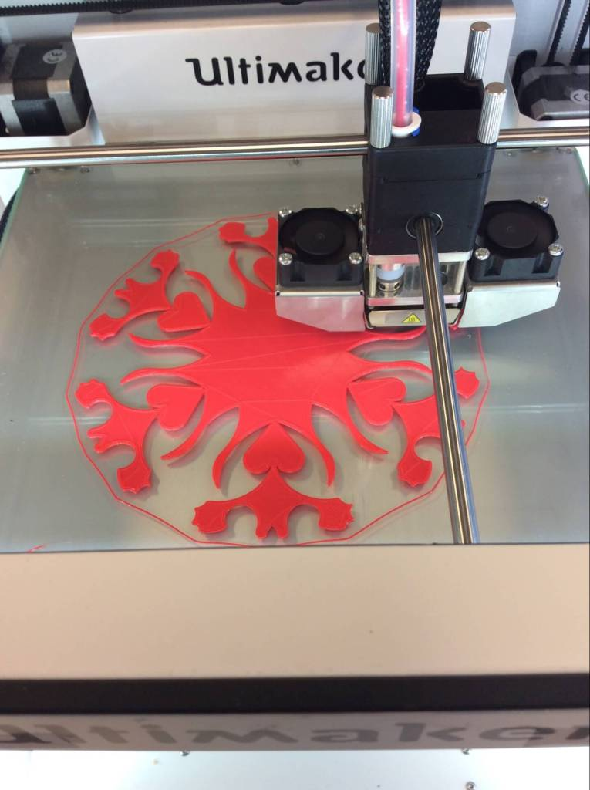
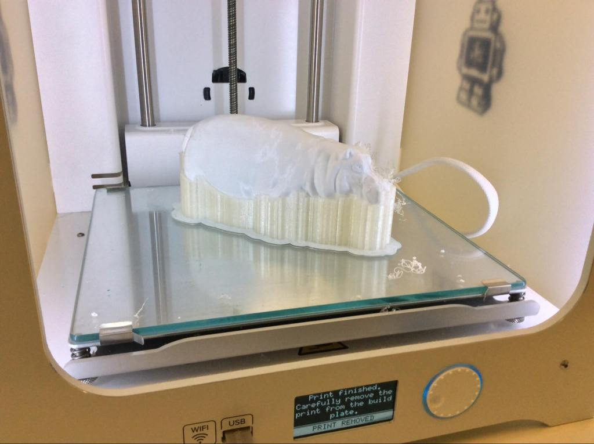
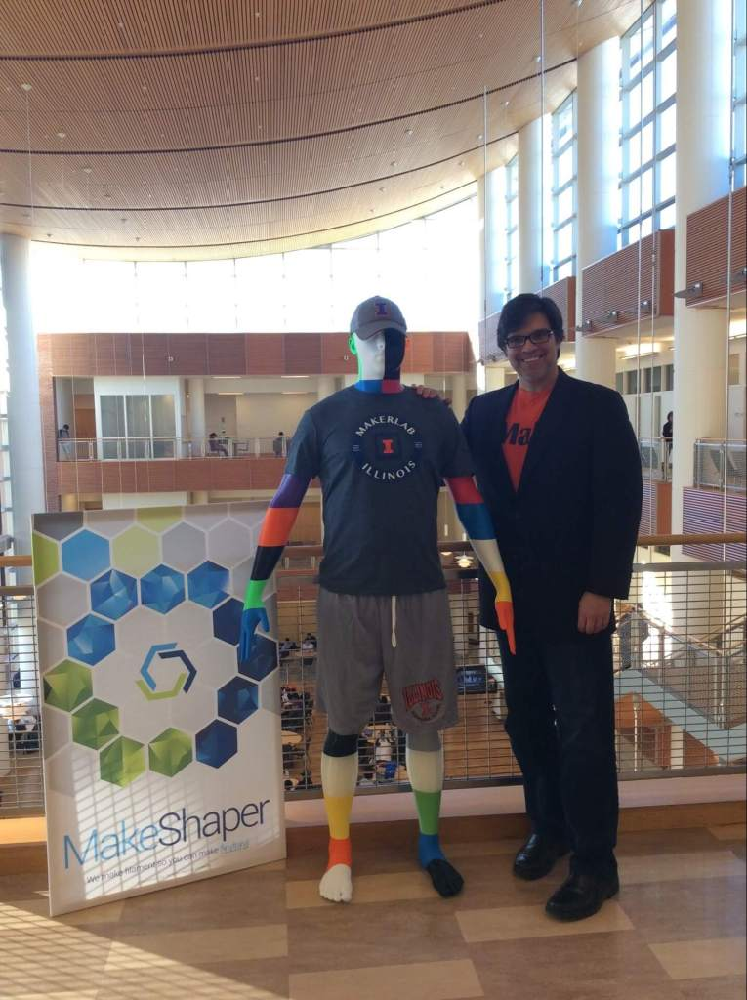
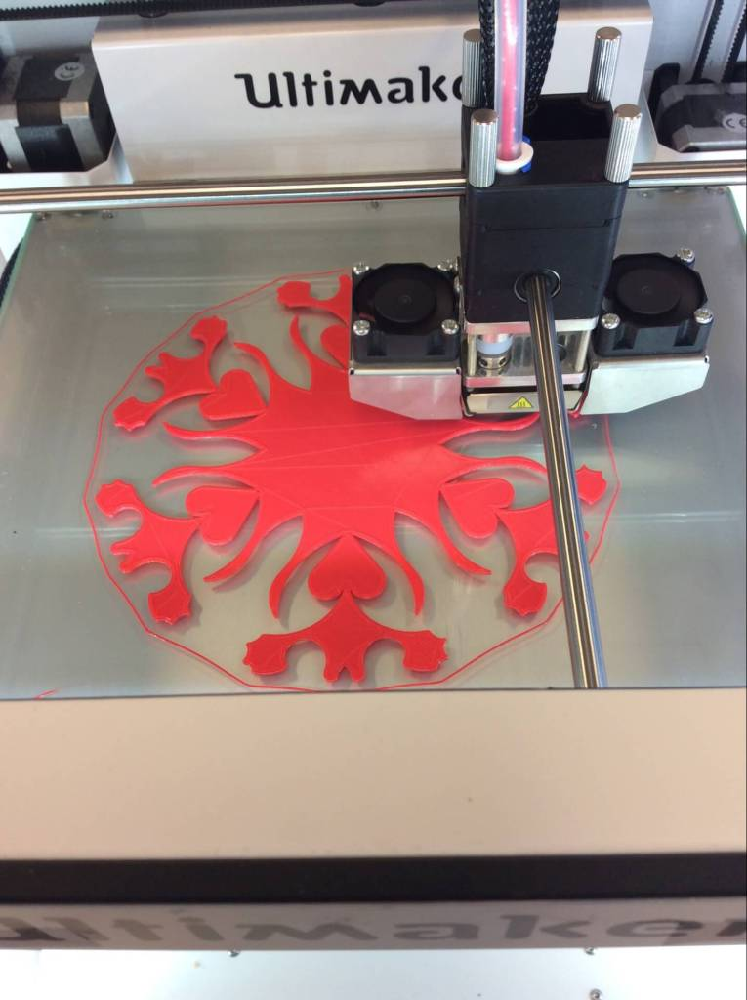
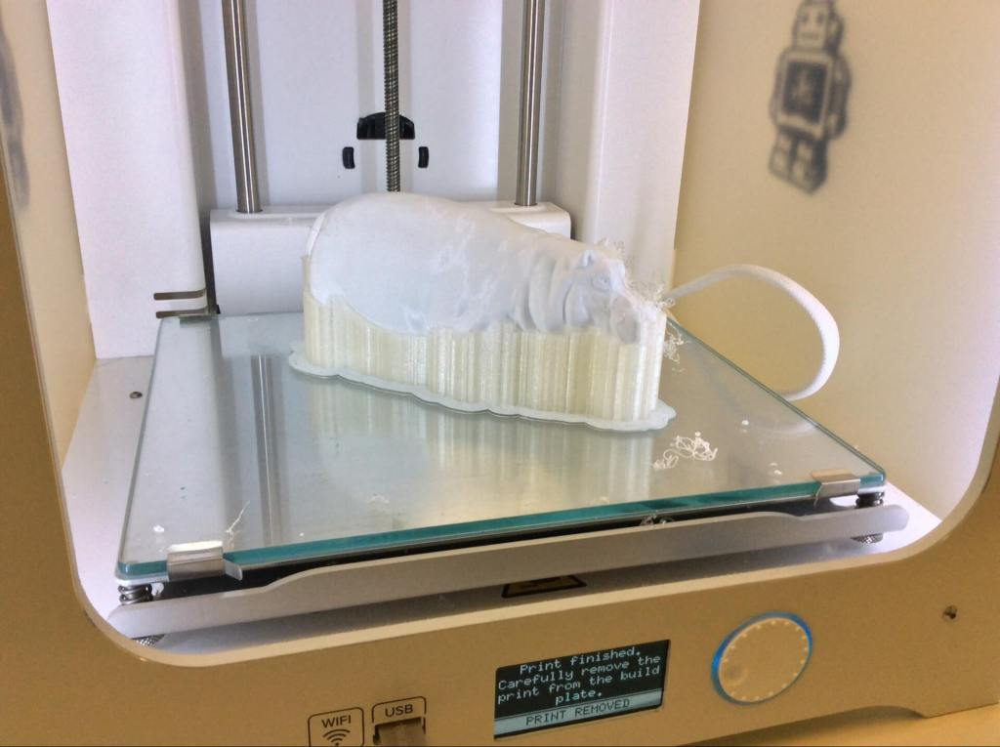
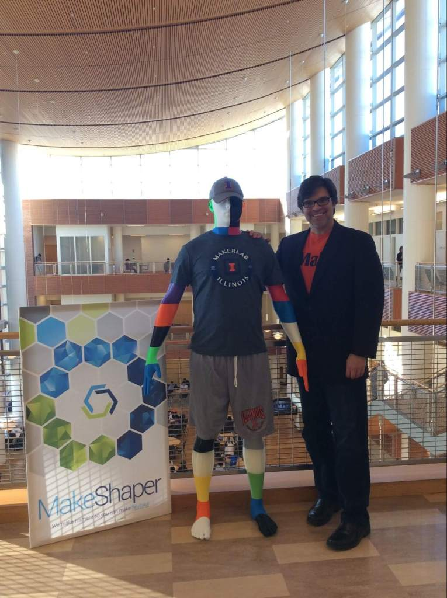
2.) Software
If you choose to design your own model to 3D Print there are many different types of 3D design/modeling softwares to choose from. At the Makerlab, all computers are equipped with TinkerCad or Autodesk Fusion 360. Makers are also known to have used Rhino, or SketchUp. You can also learn some of these software with our workshops. Please make sure when designing that all walls are at least 1mm thick or the printer will not be able to print the model!
As for our slicing software, we use Cura. Cura allows the user to customize each print by offering a variety of options to change from layer height to support structures to infill. Layer Height is how tall the layers of filament are to be printed on the z-axis. Support structures deals with the parts of the print that would be printed with nothing below it. Infill is how dense your print will turn out to be. These are just 3 of the many options Cura offers to make sure each print turns out exactly as the maker wants it to be.
3.) Hardware
20 Ultimaker printers (Build Volumes and other info on our FAQ page)
The maximum dimensions we can print are approximately 215mm x 215mm x 305mm. The max resolution we can print with on our Ultimaker machines is roughly 50 micron, or 0.05mm in the Z direction. In the XY direction, feature size is limited by the size of the nozzle we use. The available nozzle sizes are .25mm, .4mm, .6mm and .8mm.
We have recently acquired an SLA printer
This printer has a build volume of 115mm x 115mm x 120mm. We are currently in the process of calibrating the machine, but it can print at a much finer resolution. It is capable of 25 micron (0.025mm) resolution in the Z direction, and a minimum XY resolution of roughly 70 micron (0.070mm).
Kinect for Windows , the Sense Scanner and the Structure scanner (Ipad mounted) which are good enough for most object/person scans.
Raspberry PI , arduinos, breadboards, led’s and more (to have some ‘digital’ fun, such as this project).
Seven desktop computer
4.) Filament
Choosing your filament does not only mean choosing the color you wish your print to be. There are plenty different types of filament you can choose from. Filament should be chosen regarding what you are printing. The most common filament used at the MakerLab today is PLA. PLA, polylactic acid, is a vegetable based filament. When printing with PLA you should expect a nice, clean print. However, PLA prints are usually more fragile and sensitive to hot temperatures.
Another common filament used in 3D printing is ABS, acrylonitrile butadiene styrene. ABS filament is more flexible than PLA and can stand up to higher temperatures. However, ABS does has one down side. It has a problem with the prints curling up on the edges of a print if the heating bed is not hot. When printing with ABS make sure that the build plate is smooth, flat and clean before a print starts.
5.) Printing
After completing steps 1-4, your print is ready to be printed! Check out what some amazing makers have already created here at the lab.
 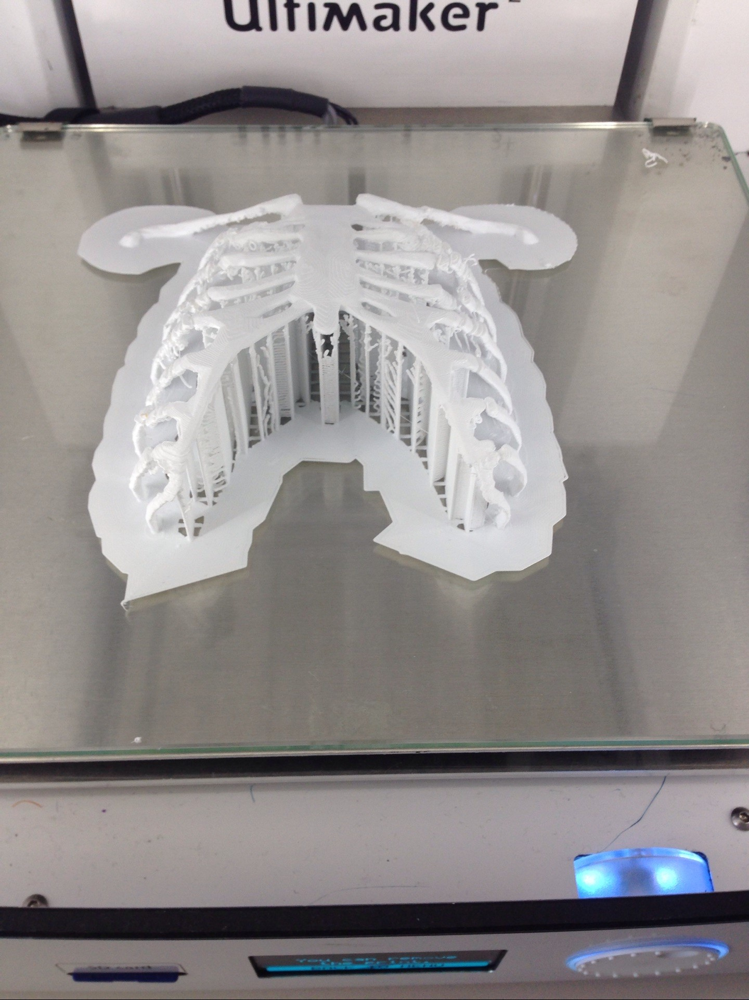
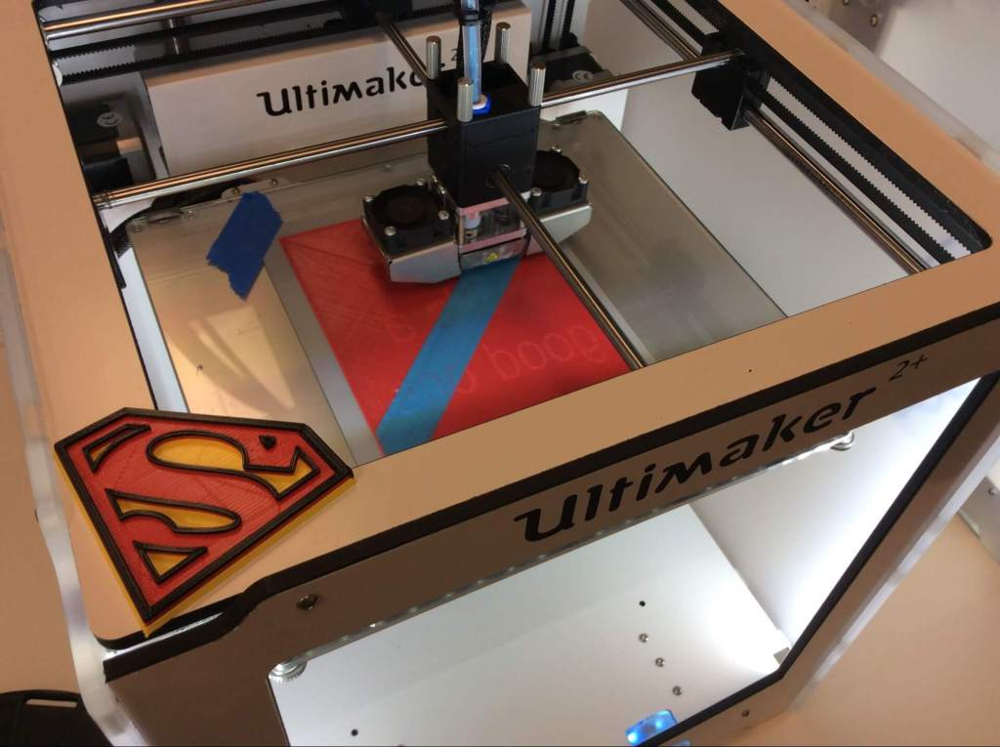
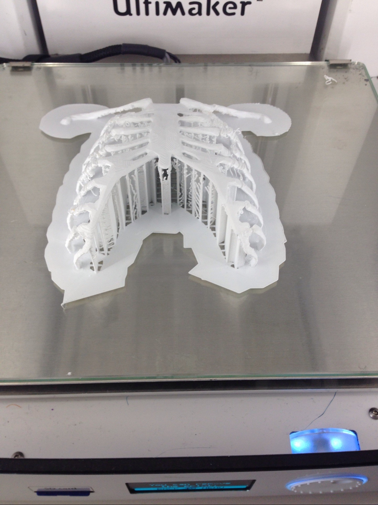
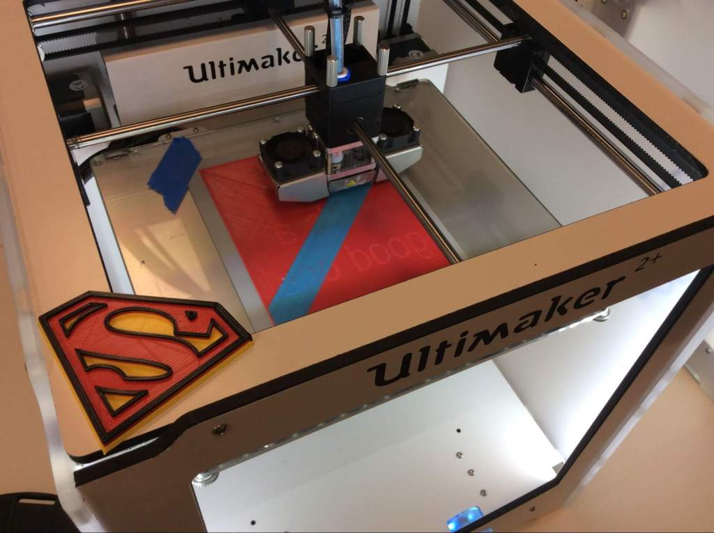
6.) Learn More!
Want to learn more about 3D Printing? Check out this video from 3D hubs on how to make a successful prototype!
Interested in other areas? Check out our other resources.
What is 3D Printing?– 3D Hubs
Getting Started With an Ultimaker– Ultimaker
How to Get ‘Perfect’ Prints– Brain Xu (Digital Making 2017)
Sign up for our Workshops